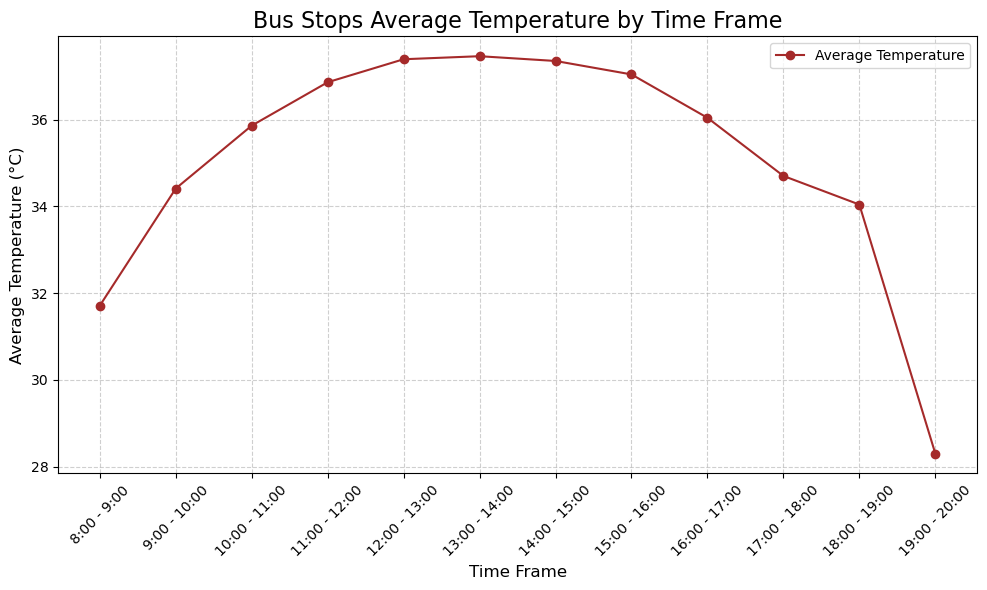

%pip install geopandas
import geopandas as gpd
import matplotlib.pyplot as plt
gdf = gpd.read_file("C:/Users/25077/Final/data/2020_PA_stops_buffer3_UTCI.geojson")
# Convert MULTIPOLYGON geometries to their centroids
gdf['geometry'] = gdf.geometry.centroid
# Reproject to WGS 84 (EPSG:4326)
gdf = gdf.to_crs(epsg=4326)
# List of time frames (column names in the GeoDataFrame)
time_frames = [f'{hour}_mean' for hour in range(8, 20)] # From 8 AM to 7 PM
# Calculate the average temperature for each time frame
average_temperatures = {time: gdf[time].mean() for time in time_frames}
import matplotlib.pyplot as plt
# Data for average temperatures
time_frames = [
"8:00 - 9:00", "9:00 - 10:00", "10:00 - 11:00", "11:00 - 12:00",
"12:00 - 13:00", "13:00 - 14:00", "14:00 - 15:00", "15:00 - 16:00",
"16:00 - 17:00", "17:00 - 18:00", "18:00 - 19:00", "19:00 - 20:00"
]
average_temperatures = [
31.71, 34.41, 35.86, 36.86, 37.39, 37.46, 37.35, 37.04,
36.04, 34.70, 34.04, 28.30
]
# Plot the chart
plt.figure(figsize=(10, 6))
plt.plot(time_frames, average_temperatures, marker='o', color='brown', label='Average Temperature')
# Add chart labels and title
plt.title("Bus Stops Average Temperature by Time Frame", fontsize=16)
plt.xlabel("Time Frame", fontsize=12)
plt.ylabel("Average Temperature (°C)", fontsize=12)
plt.xticks(rotation=45)
plt.grid(True, linestyle='--', alpha=0.6)
plt.legend()
plt.tight_layout()
# Display the chart
plt.show()Requirement already satisfied: geopandas in c:\users\25077\miniforge3\envs\musa-550-fall-2023\lib\site-packages (0.13.2)
Requirement already satisfied: fiona>=1.8.19 in c:\users\25077\miniforge3\envs\musa-550-fall-2023\lib\site-packages (from geopandas) (1.9.4)
Requirement already satisfied: packaging in c:\users\25077\miniforge3\envs\musa-550-fall-2023\lib\site-packages (from geopandas) (24.1)
Requirement already satisfied: pandas>=1.1.0 in c:\users\25077\miniforge3\envs\musa-550-fall-2023\lib\site-packages (from geopandas) (1.5.3)
Requirement already satisfied: pyproj>=3.0.1 in c:\users\25077\miniforge3\envs\musa-550-fall-2023\lib\site-packages (from geopandas) (3.6.1)
Requirement already satisfied: shapely>=1.7.1 in c:\users\25077\miniforge3\envs\musa-550-fall-2023\lib\site-packages (from geopandas) (2.0.1)
Requirement already satisfied: attrs>=19.2.0 in c:\users\25077\miniforge3\envs\musa-550-fall-2023\lib\site-packages (from fiona>=1.8.19->geopandas) (24.2.0)
Requirement already satisfied: certifi in c:\users\25077\miniforge3\envs\musa-550-fall-2023\lib\site-packages (from fiona>=1.8.19->geopandas) (2024.7.4)
Requirement already satisfied: click~=8.0 in c:\users\25077\miniforge3\envs\musa-550-fall-2023\lib\site-packages (from fiona>=1.8.19->geopandas) (8.1.7)
Requirement already satisfied: click-plugins>=1.0 in c:\users\25077\miniforge3\envs\musa-550-fall-2023\lib\site-packages (from fiona>=1.8.19->geopandas) (1.1.1)
Requirement already satisfied: cligj>=0.5 in c:\users\25077\miniforge3\envs\musa-550-fall-2023\lib\site-packages (from fiona>=1.8.19->geopandas) (0.7.2)
Requirement already satisfied: six in c:\users\25077\miniforge3\envs\musa-550-fall-2023\lib\site-packages (from fiona>=1.8.19->geopandas) (1.16.0)
Requirement already satisfied: python-dateutil>=2.8.1 in c:\users\25077\miniforge3\envs\musa-550-fall-2023\lib\site-packages (from pandas>=1.1.0->geopandas) (2.9.0)
Requirement already satisfied: pytz>=2020.1 in c:\users\25077\miniforge3\envs\musa-550-fall-2023\lib\site-packages (from pandas>=1.1.0->geopandas) (2024.1)
Requirement already satisfied: numpy>=1.21.0 in c:\users\25077\miniforge3\envs\musa-550-fall-2023\lib\site-packages (from pandas>=1.1.0->geopandas) (1.24.4)
Requirement already satisfied: colorama in c:\users\25077\miniforge3\envs\musa-550-fall-2023\lib\site-packages (from click~=8.0->fiona>=1.8.19->geopandas) (0.4.6)
Note: you may need to restart the kernel to use updated packages.